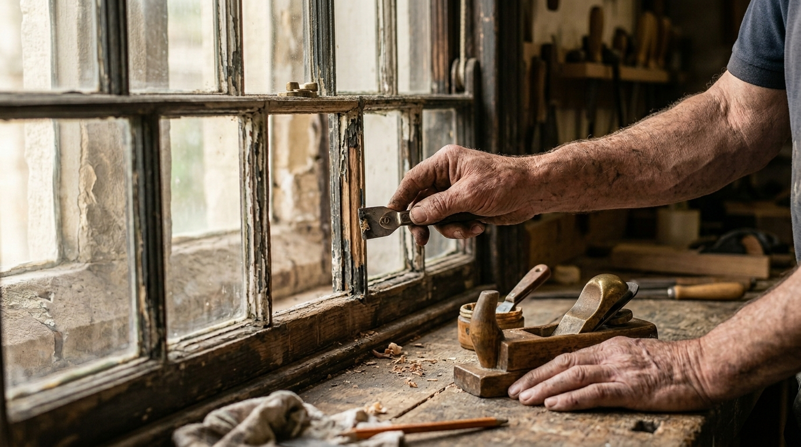
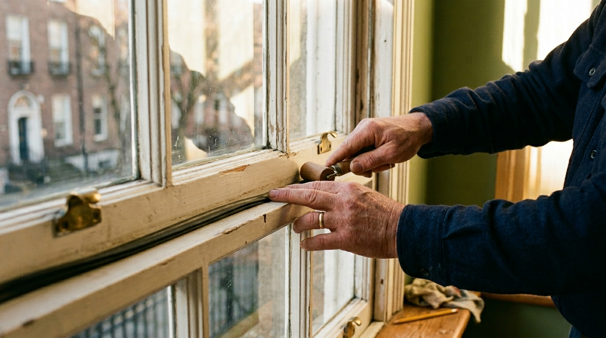
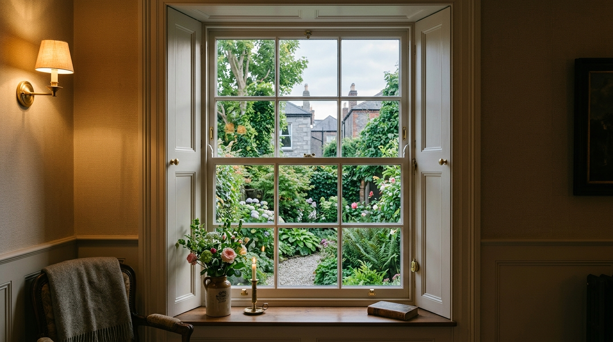

Dublin's Period Window Specialists
Nearly two decades of precision craftsmanship, preserving Ireland's
architectural heritage — one window at a time.
Nearly two decades of precision craftsmanship, preserving Ireland's
architectural heritage — one window at a time.
Dublin Windows is Ireland's specialist in sash window restoration. With nearly two decades of experience, we combine traditional joinery skills with modern techniques to bring period windows back to their original beauty — and keep them there.
We specialise exclusively in sash and casement windows for period properties — understanding the historic architecture they belong to.
Our Services →Every restoration is carried out with meticulous attention to detail — from timber repairs and glass replacement to hardware and weatherproofing.
Why Choose Us →Using only high-quality materials and proven methods, our restorations deliver long-term performance — preserving your windows for decades to come.
Get a Quote →
Rattling, stiff, draughty, or rotten — we restore timber sash windows in-situ, bringing them back to full working order without unnecessary replacement.
Learn More →
Our most popular solution — effective, affordable, and fast. Precision weatherstripping eliminates cold air and window rattles, often completed in a single afternoon.
Learn More →
When restoration isn't enough, we manufacture and install bespoke sash windows and timber casements built to match your property's original character exactly.
Learn More →From residential homes to Ireland's most iconic buildings
We understand that period windows are more than glass and timber — they are part of a building's character and history. Our approach honours that, with every job done to the highest standard.
Get a Free QuoteExclusive focus on period windows means deeper expertise than any general contractor can offer.
We repair and restore wherever possible — preserving original fabric, reducing waste, and saving you money.
Our techniques are sympathetic to protected structures and conservation areas across Ireland.
We visit your property, assess the condition of your windows, and provide a clear, honest quote — no obligation.
Every job is backed by our workmanship guarantee. We stand behind everything we do, long after we leave.
It was a pleasure dealing with Dublin Windows. Great when someone turns up on time, does exactly what they promised — with no fuss or bother.
We have to say that the windows are superb. Thanks again for another fine job — we are so happy we found you!
Dublin Windows have transformed the appearance of our house inside and out. We have received so many positive comments from friends and neighbours.
Jacob, I have one word — WOW! I didn't for one minute think you would be able to repair them. I thought they were too far gone to bring back to life.
Join our growing list of satisfied customers across Dublin and beyond.
Get Your Free QuoteCall us, drop an email, or fill in the form.
Free assessments — no obligation.